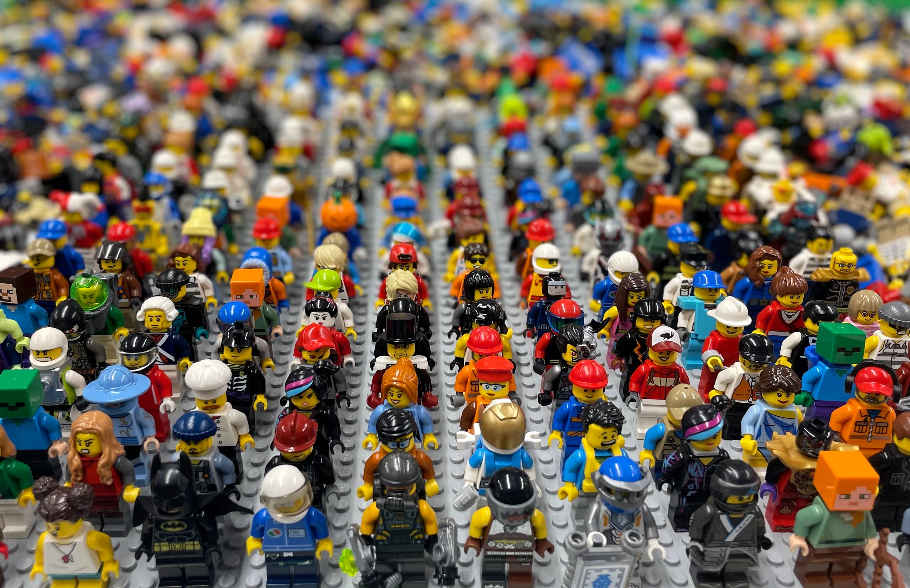
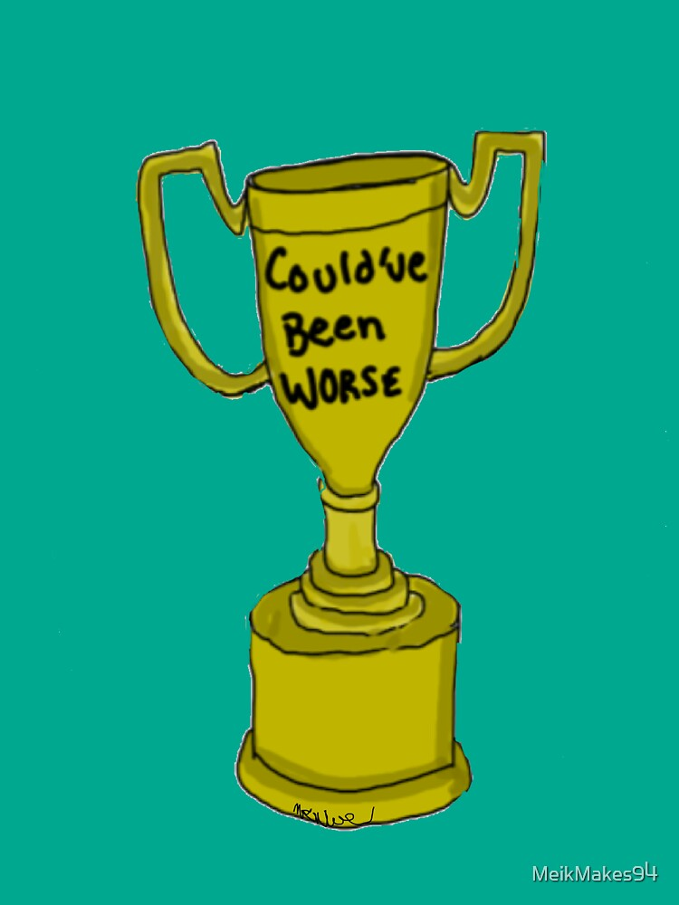

Jerry Zhang
Nickname: Jarebear
About Me
 Welcome and my name is Jerry Zhang. I live in San Diego, California.
I am 15 years old as of late and my birthday is January 6, 2010.
As a result, I attend Canyon Crest Academy as a sophomore.
I was born in the United States but my family moved to China then came back in 2018.
Welcome and my name is Jerry Zhang. I live in San Diego, California.
I am 15 years old as of late and my birthday is January 6, 2010.
As a result, I attend Canyon Crest Academy as a sophomore.
I was born in the United States but my family moved to China then came back in 2018.
What I Enjoy
I like activities such as playing video games, going to amusement parks, or swimming in my local swimming pool because these activities allow me to past the most time. My favorite video game of all time has to be Red Dead Redemption 2 due to the world-building and the pacing of the story. I remember when I would take turns with my brother on a gaming console to progress the story on Red Dead Redemption 2 but I was terrible at the game so my brother would play most of the time. My favorite amusement park is Legoland because it’s where my earliest memories originated. I like swimming because playing with water is fun and I used to take many swimming lessons back in China.
My Values
I feel the most confident when I interact with my friends because they’re the best people I’ve ever known. My strengths are my ability to help people in need and my weakness is my inability to focus. My core value is to accept criticism and become better but I’m still working on this aspect because sometimes I contradict myself. I am most grateful for my parents because they’ve provided me with essentials such as food and shelter and they give me love and kindness on a regular basis. If I am remembered for a reason, I hope it’s a positive reason but I don’t wish to be remembered.